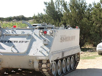
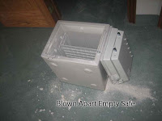

Photos courtesy of captivefldschildren.org
Havin' a good time, guys? SWAT operators wearing Nazi-style bucket-head helmets enjoy a mirthful moment on the YZF Ranch as child "protection" workers prepare to kidnap the FLDS community's children.
What stuck in the minds of these men who had become murderers was simply the notion of being involved in something historic, grandiose, unique ("a great task that occurs once in two thousand years"), which must therefore be difficult to bear. This was important, because the murderers were not sadists or killers by nature; on the contrary, a systematic effort was made to weed out all those who derived physical pleasure from what they did....


Hence the problem was how to overcome not so much their conscience as the animal pity by which all normal men are affected in the presence of physical suffering. The trick used by Himmler — who apparently was rather strongly afflicted by these instinctive reactions himself — was very simple and probably very effective; it consisted in turning these instincts around, as it were, in directing them toward the self. So that instead of saying: What horrible things I did to people!, the murderers would be able to say: What horrible things I had to watch in the pursuance of my duties, how heavily the task weighed upon my shoulders!
Hannah Arendt, Eichmann in Jerusalem: A Report on the Banality of Evil
The unremarkable face of unspeakable evil: A Sheriff's Deputy stands ready to use whatever force may be required to compel an FLDS mother to surrender her children to the State.

Most of the harm in the world is done by good people, and not by accident, lapse, or omission. It is the result of their deliberate actions, long persevered in, which they hold to be motivated by high ideals toward virtuous ends… [I]n periods when millions are slaughtered, when torture is practiced, starvation enforced, oppression made a policy, as at present over a large part of the world, and as it has often been in the past, it must be at the behest of very many good people, and even by their direct action, for what they consider a worthy object.

Isabel Patterson, “The Humanitarian With the Guillotine,” from The God of the Machine, 1943
Terry Secrest, a 54-year-old social worker from Austin, Texas, is having a hard time sleeping at night. Many of her professional associates share that affliction, and for the same reason: Like Secrest, they have been assigned or have volunteered to work with mothers from the Fundamentalist Church of Jesus Christ of Latter-day Saints (FLDS) whose children have been stolen from them at gunpoint.
Mrs. Secrest and her colleagues and, from all indications, essentially decent people. The same is probably true of the hundreds of people mobilized by the State of Texas to carry out this scheme of mass child abduction under the color of "compassionate" care.

Stipulating that all of us are fallen, flawed, sinful people, it's still true that, as Isabel Patterson pointed out decades ago, there just aren't that many genuinely wretched and vicious people in the world (in proportionate terms, of course).
It's likely that nearly every individual involved in the seizure of the FLDS children -- from those who passed along what was, in all likelihood, known to be a bogus phone call from a "victim" of domestic abuse at the FYZ ranch, to the overgrown adolescents in SWAT regalia who participated in the paramilitary assault on the religious community, to the CPS workers who used threats, lies, manipulation, and finally brute force to steal more than 400 children from mothers who loved them -- believed himself or herself to be animated by the purest motives on behalf of a worthy object.
And yet, at least some of them are now suffering long-deferred misgivings about their actions.

"Experts" -- ah, yes, those emissaries from some transcendent realm -- "say many of those professionals [working with FLDS mothers and children] may be suffering from secondary traumatic stress, a condition that affects people working with victims of trauma," reports the Austin American-Statesman. "Symptoms include anxiety, sleeplessness, nightmares and intrusive thoughts."
One source of this unexpected emotional turmoil is found in the fact that while social workers generally can offer at least a plausible explanation for the seizure of children from their homes, in this case "they didn't know the details of the investigation or what led up to the mass removals," explains Vicki Hansen, executive director of the Texas chapter for the National Association of Social Workers.
"These workers are used to going into homes where things are really bad and feeling good about moving children from risk and danger," Hansen continues. "This situation is completely different. To look at the mothers and children, you would see love and affection and bonds, plus children who appear to be in good physical condition. It was wrenching to pull children away from their mothers."
Not surprisingly, at least some of the FLDS mothers are "showing signs of post-traumatic stress disorder, such as having flashbacks of the raid on their ranch," as well as increasing anxiety over the prospect of never seeing their children again.
For the suffering of the mothers -- entirely understandable, given the criminal violence inflicted on their families -- there is little official sympathy. Most of it has been directed, Himmler-style, at those who committed that criminal violence, or who have been required to clean up the mess once the deed was done.
This spectacle of inverted sympathy is both familiar and disgusting. It must be said, however, that beneath the emotional contrivances there is an elemental truth -- the irrepressible human conscience. At least some of those involved in this massive crime are suffering because the capacity to identify good and evil has yet to be seared from their souls.
Once this is understood, the key question becomes: Why didn't anybody do something to stop this crime, before it was consummated?


Handiwork of the "rescuers": A ruined safe, its contents seized by the armed "law enforcement" officers who raided the FLDS religious community, lies discarded on the floor. Elsewhere kids' rooms were ransacked and their private possessions rifled by the raiders. Odd, isn't it, how often "law enforcement" actions resemble acts of routine criminal thuggery?Of the hundreds, or thousands, of people implicated in this crime, there must be at least a few dozen as decent as Mrs. Secrest appears to be. Why were they silent?
What might have happened if only one of the many people called upon to execute the raid on YFZ ranch have said, "I'm sorry -- but this just isn't right"? Granted, there were probably many others willing to take the place of anybody who suffered a sudden attack of conscience. Still, under the right circumstances, the refusal to carry out patently illegal orders can become contagious. Unfortunately, although Mrs. Secrest and some other social workers display all the symptoms of coming down with a painful case of decent shame, the people who ordered and carried out the raid and abduction seem to have developed an immunity.
There is at least one other group of people who tried to do something to stop the criminal assault on the FLDS mothers and children while it was in progress -- and the treatment they received reveals a great deal about the mechanisms of organized evil that carried out this abominable act.
After the FLDS children were seized at gunpoint from their eccentric but loving mothers, they were confined -- imprisoned, really -- in temporary shelters under the control of the Texas Department of Child Protective Services. Employees of the Hill Country Community Mental Health-Mental Retardation Center (MHMR) were assigned to help the CPS see to the needs of the abducted children and their mothers.
As medical professionals bound by an exacting ethical code, the MHMR personnel understood their task to be to look out for the best interests of the children as individuals. The CPS officials, by way of contrast, work for the State, which meant that their prime directive was to uphold the interests of that monstrosity. If in doing so their actions were to the benefit of the children and mothers of YFZ ranch, so much the better; if not, those under CPS control would simply have to suffer in the interests of the "greater good" -- as defined by the State, naturally.
These conflicting visions resulted in predictable tensions between the humanitarians of the MHMR, and the collectivists from the CPS, and those tensions were resolved in predictable fashion: The State officials first forced the mental health workers to sign non-disclosure agreements, and then threatened to have the state's hired thugs arrest any medical professionals accused of "interfering" with the CPS officials.
Oh my stars and garters! Who would ever want to "interfere" with the CPS -- that cadre of self-sacrificing public servants, pure of motive and overflowing with supernal compassion?
At least nine of the MHMR employees assigned to help CPS care for the FLDS children, that's who.
They described the needless and illegal seizure of the FLDS children as an atrocity, and the treatment of the children in CPS custody as an exercise in gratuitous cruelty.
Notes the Houston Chronicle: "All nine reports [from MHMR staffers] expressed varying degrees of anger toward the state's child welfare agency for removing the children from their communit, separating them from their mothers or for the way CPS workers conducted themselves at the shelter."
"I have worked in Domestic Violence/Sexual Abuse programming for over 20 years and have never seen women and children treated this poorly, not to mention their civil rights being disregarded in this manner," wrote one MHMR worker. Others described how CPS employees routinely and deliberately lied to the mothers in order to make it easier to consummate the plan to kidnap the children. Several of the mental health professionals reported that CPS denied the mothers access to legal counsel.
Anybody familiar with conditions in a day-care center knows how they quickly become incubators for sickness. So it's not surprising that cramming several hundred children (even exceptionally clean and healthy children) into a makeshift shelter in a sports stadium resulted in an outbreak of chicken pox and upper respiratory infections.
It's tempting to think that this demonstrates the "good enough for government work" ineptitude of Texas CPS -- but some MHMR workers believe that the CPS deliberately created these conditions as a form of low-intensity biological warfare: "The more uncomfortable [the children were]," one mental health professional wrote in disgust, "the more CPS thought they would talk" about the abuse they had supposedly suffered.
Had a parent deliberately exposed his children to highly communicable childhood diseases as a psychological manipulation tactic, the children would be seized from him and he would probably wind up in prison. But the Texas CPS saw nothing amiss in torturing other people's children -- having just recently nursed three of my children through severe bouts of the chicken pox, I think the word "torture" applies here -- and they wouldn't countenance any criticism of their methods. One report pointed out that "The entire MH support staff was `fired' the second week; we were sent home due to being `too compassionate.'"
Referring to the reports from MHMR staff, submitted anonymously because of the non-disclosure agreement, hospital board chairman John Kite remarked: "We were literally astounded at what they told us. They are trampling all over human decency and those people's civil rights.... We should not just sit here and watch it happen."
To the considerable credit of the MHMR staffers, they were more than merely passive witnesses to acts of surpassing viciousness. But unless something is done, very soon, to return these children to their mothers and punish those responsible for conceiving and carrying out this crime, the outrage expressed by Mr. Kite and the anonymous whistle-blowers will quickly dissipate without leaving so much as a stain on the drab, gray edifice of the official child "protection" bureaucracy.
When one thinks of it, the official color of collectivist evil is not Marxist red or fascist black; it is bureaucratic gray. Evil makes plentiful use of banners drenched in red or saturated in black, of course. But its real work is carried out within the warrens of official bureaucracy, with the eager help of normal, upstanding people who crave the safe anonymity of cooperation, and don't have the courage to make themselves conspicuous by naming officially approved evil for what it is.
Our conditioned expectations of evil lead us to look for the lurid and obvious, rather than the mundane and unexceptional. We are taught to expect evil to come in the guise of the Bizarre Outsider -- a visibly deranged dictator with an odd haircut, or people from a socially isolated sect who wear funny clothes and eschew popular culture.
A symbol of obvious evil -- But it was the phlegmatic evil of Senator Palpatine, not the flamboyant evil of Darth Maul, that was the real Menace.

But wrapping our expectations about evil in such convenient packaging can be deadly. Yes, there are times when Evil gives us due notice by following the accepted blueprint, and incarnating itself in the frothing tyrant or the dead-eyed cult leader.
But a figure of that sort is a mere catalyst for the evil that coalesces out of the collective efforts of common people -- many of whom are otherwise decent people who believe in the principle of absolution through mass conformity. It's because we expect that Evil will always materialize as a leering apparition that we become blind to the ordinary face of everyday evil.
 On sale now!
On sale now!Dum spiro, pugno!
13 comments:
After the fire, the Texas Rangers found a fireproof safe containing $50,000 in cash, plus gold and platinum. The Rangers signed the safe and its contents over to the FBI, but the safe and contents are now unaccounted for.
Dave Kopel writing about Waco, April 16,1997
President Ron Paul has acknowledged that we truly have fascism ruling our nation. This is absolute pure Nazi fascism. Where is the outrage? Where are the militias? Where is the Congressional hearings? Where are the high-priced lawyers suing each and every individual and the agencies into bankruptcy?! Where is the media to expose what the Nazis are doing?!
This is EXACTLY why America cannot suffer John "Judas McMussolini" or Hillary Stalin or Barak "Che Guevera" Obomination to be the next president. AMERICA NEEDS DR. RON PAUL FOR PRESIDENT - HE'S STILL RUNNING!
Here is the link if you want to tell Texas Dept of Family and Protective Services what you think.
https://www.dfps.state.tx.us/Contact_Us/Default.asp
I just sent them my ideas and a link to this article.
Here is a link to the online version of the report done by the State Comptroller on the state of foster care in Texas.
Forgotten Children
The main Forgotten Children Report of April 2004 is available online in its entirety at: http://www.window.state.tx.us/forgottenchildren/forgottenchildren.pdf/ . The subsequent progress report, issued in July 2004, is located at:
http://www.window.state.tx.us/forgottenchildren/progress/fcprogress.pdf .
And lastly, here is a link to our local newspaper's front page propaganda spread on this travesty.
http://www.statesman.com/news/content/region/legislature/stories/05/01/0501foster.html
Mr. Grigg has said he wants to get us to a state of outrage. Well he has. And still there seems to be nothing we can do.
I just send them an appeal of conscience, but have a feeling these "CPS" folk have long had charred consciences !
Funny the rough n' tumble snarling swat snouts don't show up in the "GETO" where everybody and their uncle has an AK-47. Of course they don't mind if people with a dark skin tone inflict random violence upon each other. In the geto 40 people might witness some violence but when the pork patrol trough feeders come asking questions nobody saw nothing.
“A nation can survive its fools, and even the ambitious. But it cannot survive treason from within. An enemy at the gates is less formidable, for he is known and he carries his banners openly. But the traitor moves among those within the gate freely, his sly whispers rustling through all the alleys, heard in the very halls of government itself. For the traitor appears not traitor, he speaks in the accents familiar to his victims, and he wears their face and their garments, and he appeals to the baseness that lies deep in the hearts of all men. He rots the soul of a nation, he works secretly and unknown in the night to undermine the pillars of a city, he infects the body politic so that it can no longer resist. A murderer is less to be feared.”
- Cicero, 42 B.C.
As one of the largest organized criminal rapist pedophile rings on the face of the Earth, the government of Texas has zero credibility to be telling anyone how to treat children. And the notion that the government of Texas can provide a more beneficent environment for these children is more absurd than the notion that any common repeat-offender rapist would make a better caretaker for these children (as a commoner repeat-offender rapist doesn't have the manpower and apparatus of the state in which to conduct his proclivities in a truly widescale manner; nor, unlike the state, is he corporeally impune).
The state of Texas treats children in its custody in an utterly horrific manner, such as the pandemic child-rape scandal involving the Texas Youth Commission ( http://www.tyc.state.tx.us ), the state of Texas' juvenile so-called "corrections" agency (although note that the manner of "offenses" which can land a child in this pedophilic government agency's clutches can be quite piddling, or nonexistent).
A Texas Ranger investigation documented that guards and administrators were sexually abusing the institution's teenage boy inmates. Among the charges in the Texas Ranger report were that administrators would rouse boys from their sleep for the purpose of conducting all-night sex parties with them. And that's only touching on a small part of this massive child-rape scandal.
For much more on this, see the below documentation:
"Embattled AG now accused in sex scandal 'cover-up': Attorney General Gonzales among officials who allegedly ignored abuse of minor boys," Dr. Jerome R. Corsi, WorldNetDaily.com, March 25, 2007 http://www.wnd.com/news/article.asp?ARTICLE_ID=54861
Below are documents pertaining to the above matter:
http://www.lonestarproject.net/files/DOJletter.pdf
http://www.lonestarproject.net/files/Burzynskiemail.pdf
http://www.lonestarproject.net/files/DOJTYC.pdf
http://www.lonestarproject.net/archive/2007-03-09%20-%20TYC_Abbott.pdf
http://www.lonestarproject.net/archive/2007-03-09%20-%20TYC_Perry-Kimbrough.pdf
http://www.lonestarproject.net/archive/2007-02-28%20-%20failed%20Leader%20-%20Perry.pdf
"Teen sex scandal ignored by AG, others for 2 years: Probe widened, involving hundreds of complaints of sexual abuse in system," Dr. Jerome R. Corsi, WorldNetDaily.com, March 27, 2007 http://www.wnd.com/news/article.asp?ARTICLE_ID=54882
"Texas governor knew about teen sex scandal: Said he learned of it in newspaper but spokesman admits awareness 2 years ago," Dr. Jerome R. Corsi, WorldNetDaily.com, March 28, 2007 http://www.wnd.com/news/article.asp?ARTICLE_ID=54904
"'They broke his jaw, busted his eye': Mother describes attacks on son in Texas Youth Commission custody," Dr. Jerome R. Corsi, WorldNetDaily.com, April 3, 2007 http://www.wnd.com/news/article.asp?ARTICLE_ID=54995
"Felons hired by Texas to run prison system; Spokesman: We're working out just how to get rid of 'bad actors,'" Dr. Jerome R. Corsi, WorldNetDaily.com, April 3, 2007 http://www.wnd.com/news/article.asp?ARTICLE_ID=54997
"Nearly 300 freed because of teen-sex probe: Texas youth prison officials say another 1,000 cases under review," Dr. Jerome R. Corsi, WorldNetDaily.com, April 5, 2007 http://www.wnd.com/news/article.asp?ARTICLE_ID=55039
"Gonzales Implicated In Cover-Up Of New Pedophile Scandal: Letter from Sutton's office legitimized raping of boys in minor's facility," Paul Joseph Watson, Prison Planet, March 26, 2007 http://www.prisonplanet.com/articles/march2007/260307pedophilescandal.htm
Below is a March 26, 2007 interview of Dr. Jerome R. Corsi by Alex Jones involving the Texas Youth Commission child-sex scandal:
http://prisonplanet.com/audio/260307corsi.mp3
The following link contains an article series on this matter by the Dallas Morning News:
"Investigative Reports: Texas Youth Commission," Dallas Morning News http://www.dallasnews.com/investigativereports/tyc/
"10 months after scandal, problems plague Texas Youth Commission: Officials tout improved system; advocates argue changes are marginal," Doug J. Swanson and Gregg Jones, Dallas Morning News, December 16, 2007 http://www.dallasnews.com/sharedcontent/dws/dn/latestnews/stories/121607dnprotycyearend.2b704ee.html
I watched a video on Faux News site of a mother stating her 5 children were placed from the northern tip to the southern tip of Texas. Try following the kidnappers on that one. She also said that her one daughter was 23, but Texas CPS would not accept her BIRTH CERTIFICATE and DRIVERS LICENSE from UTAH, and was holding her as a "16 year old". This was after Shep the snake tried to corner the mother into admitting that their were "under 18 year old mothers". I wonder how many "under 18 year old mothers" exist in the "normal" population? Do they get kidnapped by the CPS? It was an interesting video, and the attorney representing the couple very vocal.
Just a side note, I had the opportunity today to watch, in person, the Nazi machine working on the raids in Iowa. They had buses, helicopters, SUV's, (with "Federal Protection Police" on the side). They rounded up, they said, 300 "illegals", which caused the local redneck league to go into a hysteria of flag waving. Forget about the administration's real efforts at immigration control-at the border-which has been non existent save a stupid fence.
They had their black suits on, their 8ft chains of handcuffs, and many buses to haul society's problem to the "storage" area, (which is normally used as cattle barns for the fair) which have been retro fitted with generators (?) and ventilation (why?) units.
My tax dollars at work, it was glorius.
Americans Are Living (And Dying) In A Militarized Police State
Dave Gibson
Dave Gibson is a freelance writer living in Norfolk, Va.
Dave Gibson
May 05, 2008
Today, police departments across the United States more closely resemble an occupying army than they do public servants responding to calls for help. Police officers can now be seen wearing helmets and body armor and carrying AR-15's, just to deliver simple warrants. The militarization of our police departments not only gives the appearance of a military dictatorship but places the public at great risk.
No less than 70 percent of U.S. cities now have SWAT teams. In cities with a population of 50,000 or more, 90 percent have SWAT teams.
Eastern Kentucky University professor Peter Kraska told the Washington Post that SWAT teams are currently sent out 40,000 times a year in the U.S. During the 1980's, SWAT teams were only used 3,000 times a year. Most of the time, SWAT teams are being sent out to simply serve warrants on non-violent drug offenders.
Many municipalities are using Homeland Security grants to even purchase large armored vehicles. The Pittsburgh Police Department now uses their 20-ton armored truck complete with rotating turret and gun ports to deliver many of their warrants. Pittsburgh Police Sgt. Barry Budd recently told the Associate Press: "We live on being prepared for 'what if'."
Our police departments now regularly receive free surplus equipment from the U.S. military, which they readily accept. The training being given at many police academies appears to be the type of tactics one would use in Baghdad, rather than Baltimore. It would seem that our police officers are being readied for war, with the American public as the enemy. In the last several years, there has been a transformation from community policing to pre-emptive assaults
On January 24, 2006, Dr. Salvatore Culosi was shot and killed outside his house by a Fairfax County SWAT officer. Police used the SWAT team to serve a documents search warrant, after Dr. Culosi came under suspicion for taking sports bets. The investigation began after Fairfax Detective David Baucom solicited a bet with Dr. Culosi at a local sports bar.
Dr. Culosi was standing outside his home while talking with Det. Baucom, when SWAT Officer Deval Bullock quickly approached with his gun drawn and fatally shot Dr. Culosi in the chest. Court documents report that Culosi never made any threatening movements and made no attempt to run as he watched the SWAT team move in around him.
Dr. Culosi had no history of violence nor any criminal history whatsoever. He operated two successful optometry clinics at Wal-Marts in Manassas and Warrenton, Va. His parents have filed a $12 million lawsuit against the county of Fairfax, Va.
On the night of January 17, 2008, a police SWAT team surrounded Ryan Frederick´s home in Chesapeake, Va. The police were there to serve a drug warrant based on a tip from a criminal informant.
As usual, 28 year-old Ryan Frederick had gone to sleep early in order to leave the house before dawn for his job with a soda distributor. He awoke to a commotion of screams and the distinct sound of someone breaking down his front door.
Frederick´s house had been broken into a few days earlier, being a slight man of only a little over 100 pounds, Frederick feared for his safety. After the break-in, he purchased a gun.
Understandably frightened, Frederick grabbed his gun and when he got to the front of his house, he saw a man trying to crawl through the bottom portion of his door. Terrified that the intruders had returned, he fired.
The man he shot was not an aggressive burglar, nor a drug-crazed murderer, he was Det. Jarrod Shivers. The police detective and military veteran died almost immediately. Frederick was charged with first-degree murder and now sits in a jail cell awaiting trial.
As for the marijuana-growing operation for which police were looking, nothing was found. Only a very small amount of marijuana was discovered on the Frederick property, only enough to charge him with misdemeanor possession. Frederick has admitted that he uses marijuana occasionally but has never been involved with producing nor selling the drug.
Ryan Frederick has no prior history of violence, nor any criminal history whatsoever. He took care of his grandmother until her death two years ago, had a full-time job, and recently became engaged. In his spare time, he worked in his yard and tended to his Koi
pond…Not quite the drug kingpin type!
However, based solely on the word of an informant, police obtained a warrant and stormed into this man´s house in the dark of night. The information turned out to be false, a police officer and father of three is dead, and a decent young man´s life is now over.
When Ryan Frederick awoke to the sounds of his home being invaded, he did what many of us would do. He acted reasonably when he grabbed his gun to defend himself and fired at a man who he believed was breaking into his home to do him harm.
Had the police simply went to his home during the daytime and knocked on his door, they could have questioned Frederick and found their information to be groundless. A little traditional police work could have saved the life of a police officer and the Shivers and Frederick families would have remained whole.
The Ryan Frederick story is truly frightening because this same scenario could play itself out in your home or mine. In the age of militarized police departments, we are all in danger.
Here are a few more recent victims of our militarized police departments:
Cheryl Lynn Noel, a mom who was shot by police for picking up her legally registered handgun. She went for her gun to defend herself after a SWAT team in the middle of the night, broke into her Baltimore, MD home. Police stormed her house that night because they claim to have found marijuana seeds in the family's trash can.
Rev. Acelyne Williams, 75 of Boston, died of a heart attack as a SWAT team broke into his home. Police actually had the wrong address.
92 year old Kathryn Johnston who was so fearful that she never left her home and would only open her door after friends who placed her groceries on the front porch had left, was killed by an Atlanta SWAT team last year. An erroneous tip from an informant was enough for the Atlanta Police Department to invade her home. Police have since admitted to lying to obtain a search warrant and to planting drugs in her home after killing her.
In 2006, a 52 member SWAT team stormed into a Denver home in search of a friendly small-stakes poker game. The same thing happened a few months later when SWAT and K-9 units barged in on a charity poker game in Baltimore.
When someone straps on body armor and large caliber weapons, their adrenalin levels begin to surge. As they arrive at the scene, those levels increase. When these now militarized police officers actually break into a dark home and begin shouting at terrified citizens, severe injury and death is likely to occur. It is beyond reason to employ these tactics on anyone other than hardened, violent criminals.
SWAT teams were created in the wake of the 1966 University of Texas sniper shooting spree by ex-marine Charles Whitman. Police did not have the firepower to reach Whitman, who was perched atop the 27-story clock tower. Civilians with hunting rifles came to the scene and joined with police in the effort to stop Whitman. Eventually, police officers and a well-armed citizen scaled the stairs of the tower and killed Whitman, but not before he killed 17 people and injured another 31. As a result of the incident, police departments began to assemble small teams of highly trained officers with equipment specific to sniper shootings, hostage situations, bank robberies, etc.
SWAT teams were designed to deal with very violent individuals who represent a clear and present threat to the public. However, they are now being used to execute warrants on non-violent offenders and even those who have no prior criminal history at all. Turning our neighborhood cops into shock troops will do nothing but erode public confidence in the police and endanger the lives of innocent Americans.
Recently, Boston´s new police commissioner William Fitchet announced that the department´s Street Crimes Unit will begin wearing military-style black uniforms, to instill a sense of "fear." At last week´s city council meeting, police Sgt. John Delaney told council members that the black uniforms would send the message that officers were serious.
Did someone declare martial law?
Source: Rogue Government - Lee Rogers
As predicted last week, ICE has begun factory raids of illegal aliens in Iowa. This was not very difficult to predict. The federal government last week leased out the National Cattle Congress fairgrounds in Waterloo, Iowa until May 25th and began moving trailers and generators on location. Reports from the Des Moines Register and the Waterloo Cedar Falls Courier indicated that FEMA and ICE, two agencies within the Department of Homeland Security were involved in this secretive operation. Considering the large groups of illegal alien factory workers in the area of the fairgrounds, it wasn’t hard to figure out what was going to happen next. The Department of Homeland Security has now decided to go live with their test FEMA camp operation and are using illegal aliens as live subjects for processing purposes. This is a drill designed to setup a FEMA camp that will be used to process American citizens. Make no mistake about it, this has nothing to do with stopping illegal immigration. Rounding up a few hundred illegal aliens and asking them questions is going to do nothing to resolve the policies that have encouraged and facilitated the illegal alien problem. It does however serve as a fine test run for processing large groups of people through a FEMA camp.
From the Des Moines Register:
Four Homeland Security buses with U.S. Immigration and Customs tags on them have entered the Agriprocessors Inc. complex.
The buses, along with a trail of SUVs and vans with Minnesota license plates, arrived at about 11:45 a.m. Federal agents descended upon this northeast Iowa community at about 10 a.m. today to conduct an immigration raid at the nation’s largest kosher meatpacking plant. The ICE agents entered the Postville plant to execute a criminal search warrant for evidence relating to aggravated identity theft, fraudulent use of Social Security numbers and other crimes, said Tim Counts, a Midwest ICE spokesman. Agents are also executing a civil search warrant for people illegally in the United States, he said.
Immigration officials told aides to U.S. Rep. Bruce Braley that they expect 600 to 700 arrests. About 1,000 to 1,050 people work at the plant, according to Iowa Workforce Development.
What’s really suspicious about this whole thing is that Braley said that this whole operation is more of an investigation instead of an actual raid. According to his statements published in the Des Moines Register report, it appears as if the FEMA camp on the National Cattle Congress fairgrounds is going to serve as a processing center. This gives more credence to the observation that this exercise is nothing more than a drill to test processing procedures for large groups of people.
Aides to Braley, a Waterloo Democrat, said they have been told that “hundreds” of arrests are expected because the action is more of an “investigation” than an immigration raid, and specific individuals are being targeted for arrest as part of the investigation.
Jeff Giertz, a spokesman for Braley, said immigration officials left the impression that the Cattle Congress site will be used mainly for processing of suspects rather than any long-term detention.
Counts said that each person being arrested would be questioned by ICE and by Public Health Service medical professionals to determine if they have humanitarian issues, including child care giver or medical issues.
“Those interviews will aid ICE in determining whether people will be detained or conditionally released on humanitarian grounds, pending their immigration court appearance,” Counts said.
Back at the National Cattle Congress fairgrounds there are additional reports from the Des Moines Register of men wearing black uniforms from the Department of Homeland Security patrolling the area. There are also helicopters flying around. Why would they have men running around wearing black uniforms with helicopters flying overhead if they weren’t planning on using this site for something important? It is pretty clear that the fairgrounds are being used as a processing center for the illegal aliens that they round up. Where else would they take hundreds of people? It is doubtful that they would put them up in a five-star hotel.
In Waterloo, a helicopter cruised over the Cattle Congress fairgrounds about 12:45 p.m. as a group of about five reporters watched from a parking lot across the street from the main gate.
U.S. Department of Homeland Security officials in black uniforms were posted at the gate and referred all reporter questions to Tim Counts, the spokesman.
It is possible that we might see additional raids considering that the federal government has leased out the fairgrounds until May 25th. Either way, this operation will do nothing to resolve the illegal alien issue that most Americans are up in arms about, but it is very effective at training their people as to how to setup a detention and processing center for American citizens. The federal government is getting ready to put large amounts of people in camps and they don't care what the American people think about it.
I think it bears pointing out that your condemnation of the Texas CPS, while well deserved, is merely the enforcement arm of a much larger 'evil' that exists in each and every state - that being the family court system.
The 1996 HHS bill, known as the Bradley Amendment, provided substantial incentives to states to engage in the very kind of activity seen egregiously in this single instance. States were bribed into adopting legislation, that the feds knew they could not legitimately pass at a federal level, with the threat of loss of 'federal funding'. It was not the first time that the feds have engaged in such tactics, but it was - and continues to be - the single greatest threat to families (those still intact) in this country.
No one who has been through the family court system, or should I say no man who has been through it, cannot recognize the pattern. Take the kids, issue a support judgment (sealed, of course) and stick your snout in the federal trough. I predict that this is just a test case (much as Waco) and, if allowed to stand, will usher in a whole new twist to the family law industry that gov't has created (and mind you this is a multi-billion dollar industry for the most loathsome of humanity, lawyers).
CPS people, H&W people - their title matters not - are the Large Soft Target (LST) of my personal choice as I have a very intimate grudge against them and have for many years. And they are not terribly smart as a general rule, many in their employ can have their home addresses easily accessed with a simple web search.
One has to wonder what might come should the public at large become aware that such information were widely available to the unwashed masses . . .
Please visit
http://english-rose-uk.blogspot.com/
and consider signing the petition re: Vargas
thanks
Monday, 12 May 2008
Sign this petition
In the 2007, the 'artist' Guillermo Vargas Habacuc, took a dog from the street, he tied him to a rope in an art gallery, starving him to death. For several days, the 'artist' and the visitors of the exhibition have watched emotionless the shameful 'masterpiece' based on the dog's agony, until eventually he died!
Does it look like art to you?
But this is not all ... the prestigious Visual Arts Biennial of the Central American decided that the 'installation' was actually art, so that Guillermo Vargas Habacuc has been invited to repeat his cruel action for the biennial of 2008.
Lets Stop him!
Please sign the following petition:
Boycott to the presence of Guillermo Vargas "Habacuc" at the Bienal Centroamericana Honduras 2008
Sign here
Anonymous - 8:32 am
Thank you for the information. I just spent two hours composing and sending an email to the Texas CPS -actually two messages, since my first attempted submission triggered some kind of an error messsage having to do, I believe, with quotation marks inside a sentence. So I separated the original draft into two.
This whole affair at Eldorado has been wrenching my gut as badly as the detainie torturing has. Even if no one else were to join my outcry - even if common folk like me no longer have any realistic chance of enjoing a bureacracy as mindless, entenched, and monolithic as the Texas CPS, my anger about what they have done to these children and their families, eccentric though they may be, runs so deep that I am driven to weigh in nonetheless. If nothing else, at least they will have heard me tell them, as clearly and simply as I can - impelled by all the grief and outrage that I feel - how patently Evil their conduct is.
When my wife called me from work shortly after I sent my message, I broke into tears. As a former military guy, I'm normally pretty hard-bitten, but this travesty, involving as it does so many beautiful and innocent children, has put me over the edge.
With utmost humility I have asked God to lift my own Fears and Attachments to things trivial so that, wherever I am, whoever I encounter, no matter how humble my station in life, I can help bring a measure of justice and freedom into the world.
Mr. Grigg, thank you for your ongoing sympathetic coverage of those who have been and are being abused by a system gone absolutely mad.
I have to wonder if faxing letters expressing our individual indignation to Texas Governor Perry and Child Protective Services might alert them to the fact that they are acting against the public concept of justice.
Post a Comment